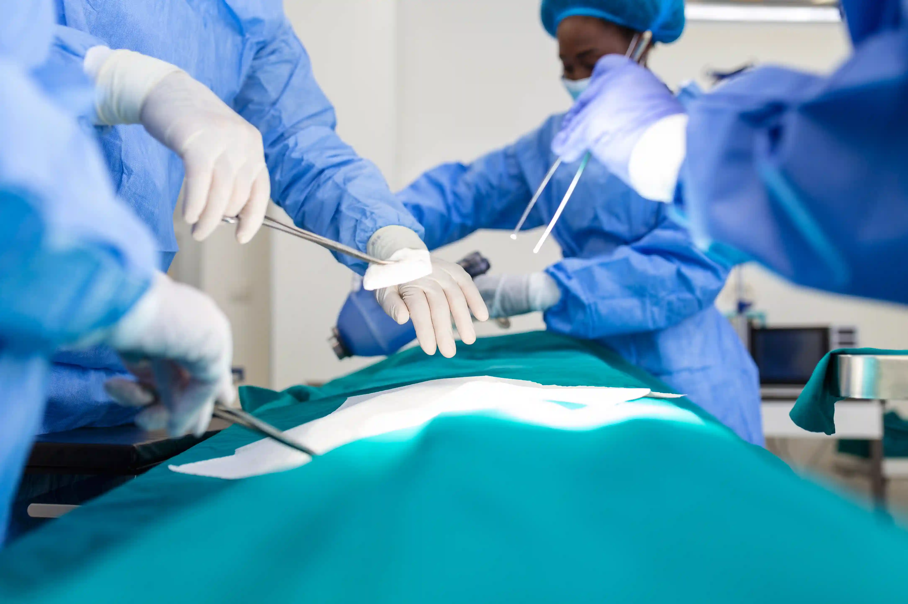
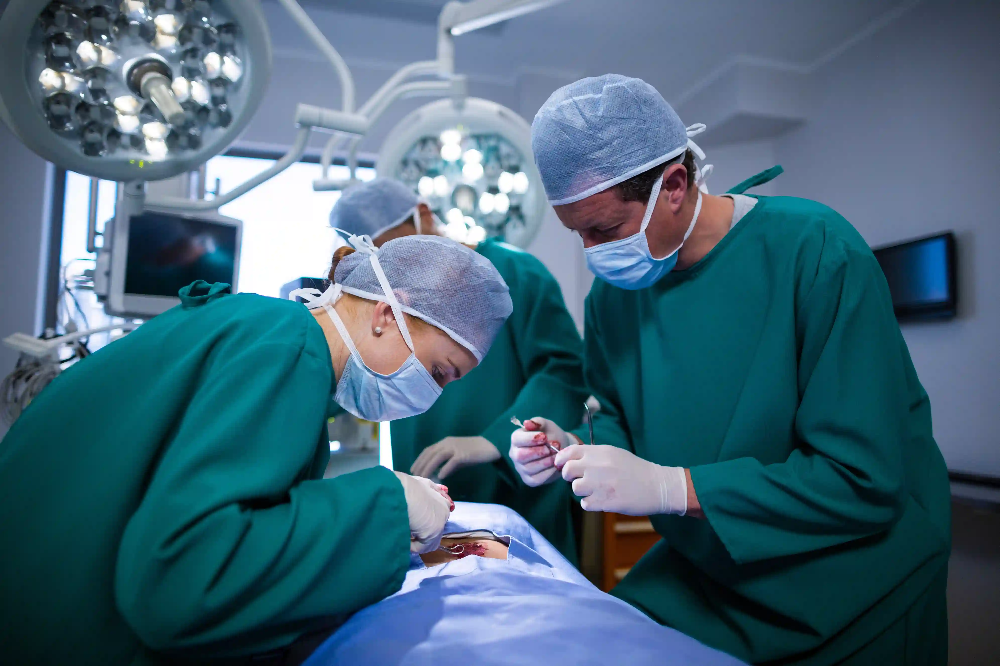

Published: 13 May 2026 | Reviewed by: Gani Hospitals Surgical Team, Ramanathapuram
Laparoscopic surgery in Ramanathapuram offers safer treatment with smaller cuts, less pain, faster recovery, and shorter hospital stays. At Gani Hospitals, our experienced team performs advanced keyhole surgery for gallbladder stones, hernia, appendix, ovarian cysts, and other abdominal conditions. Known as a trusted surgical hospital in Ramnad, we combine modern technology with expert care to deliver the best results. If you are searching for minimally invasive surgery in Ramanathapuram, this guide explains how laparoscopy works, its benefits, and why many patients choose Gani Hospitals.

The most trusted destination for laparoscopic surgery in Ramanathapuram is Gani Hospitals surgeries department — the best surgical hospital in Ramnad for keyhole procedures including gallbladder stone treatment, appendix removal, hernia repair, and general surgery Ramanathapuram patients need across all specialties. Our best surgeon in Ramanathapuram team performs minimally invasive surgery Ramnad using advanced laparoscopic equipment with same-day admission and discharge within 24 to 48 hours for most standard procedures at our advanced surgery center near me.
Laparoscopy — commonly called keyhole surgery — is a minimally invasive surgical technique in which the surgeon operates through small incisions (typically 0.5 to 1.5 centimetres) rather than a single large cut. A thin, flexible camera called a laparoscope is inserted through one incision, transmitting a magnified, high-definition video image of the internal organs to a screen in the operating theatre. Surgical instruments are inserted through additional small incisions, and the surgeon performs the entire procedure while viewing the internal anatomy on the monitor.
Laparoscopic surgery in Ramanathapuram at Gani Hospitals surgeries department represents one of the most significant advances in modern surgical care available in the Ramnad district. Before laparoscopy became the standard of care, procedures like gallbladder stone treatment required a 10 to 15 centimetre abdominal incision, a week-long hospital stay, and 4 to 6 weeks of recovery. Today, the same procedure is completed at our advanced surgery center near me through three tiny incisions, with patients going home the following day and returning to work within a week. This transformation in surgical outcomes is why Gani Hospitals surgeries has become the first choice for general surgery Ramanathapuram patients seeking the best combination of safety, speed, and surgical expertise.
Understanding why your best surgeon in Ramanathapuram recommends laparoscopy over open surgery requires a clear side-by-side comparison. The minimally invasive surgery Ramnad approach at Gani Hospitals surgeries offers measurable advantages across every dimension of the surgical experience:
Our advanced surgery center near me in Ramanathapuram performs a comprehensive range of laparoscopic procedures. The best surgical hospital in Ramnad for keyhole surgery covers the following conditions and operations through minimally invasive surgery Ramnad:
Gallbladder stone treatment by laparoscopic cholecystectomy is the most commonly performed procedure at Gani Hospitals surgeries. Gallstones cause severe colicky pain, nausea, and jaundice — and can lead to dangerous complications including cholecystitis and pancreatitis if left untreated. Our best surgeon in Ramanathapuram removes the gallbladder through three small incisions under general anaesthesia, with patients discharged the following morning. This is the gold standard gallbladder stone treatment worldwide and the procedure our surgical team performs with the highest frequency at our advanced surgery center near me.
Acute appendicitis is a surgical emergency. Families frequently ask about appendix surgery cost Ramnad at our centre — the answer is transparent, affordable, and insurance-supported. The surgery requires prompt appendix removal. The appendix surgery cost Ramnad at Gani Hospitals surgeries covers laparoscopic appendectomy — a procedure completed in under 45 minutes through three tiny incisions. Patients are discharged within 24 hours in uncomplicated cases — and the appendix surgery cost Ramnad at Gani Hospitals includes all hospital fees, OT charges, and post-operative follow-up. Laparoscopic appendectomy produces significantly less post-operative pain, lower infection risk, and faster recovery than open appendectomy. For families concerned about appendix surgery cost Ramnad, our transparent pricing and insurance coordination team provides a full cost estimate before the procedure at our best surgical hospital in Ramnad.
Inguinal hernia — where abdominal tissue pushes through a weak point in the groin — is the most common surgical condition in adult men. Our laparoscopic surgery in Ramanathapuram team repairs hernias using the TEP (Totally Extraperitoneal) or TAPP (Trans-Abdominal Pre-Peritoneal) technique — placing a surgical mesh through tiny incisions without entering the abdominal cavity. This approach at our general surgery Ramanathapuram centre produces dramatically lower recurrence rates and faster recovery than traditional open hernia repair. Bilateral hernias can be repaired simultaneously through the same small incisions — a significant advantage for the patient.
Our minimally invasive surgery Ramnad programme includes laparoscopic management of ovarian cysts (cystectomy), ectopic pregnancy, fibroid removal (myomectomy), diagnostic laparoscopy for pelvic pain, and laparoscopic hysterectomy. Women who previously faced major open surgery with long recovery periods now benefit from keyhole approaches at our advanced surgery center near me in Ramanathapuram — returning home within 48 hours of most gynaecological laparoscopic procedures.
When abdominal pain, infertility, or other symptoms remain unexplained after imaging studies, diagnostic laparoscopy at Gani Hospitals surgeries allows direct visualisation of the abdominal and pelvic organs. This procedure is minimally invasive and performed as a day case at our general surgery Ramanathapuram unit — providing answers that no scan or blood test can deliver. Our best surgeon in Ramanathapuram team uses diagnostic laparoscopy to confirm conditions including endometriosis, adhesions, pelvic inflammatory disease, and unexplained ascites.
For patients with severe obesity and obesity-related conditions including type 2 diabetes and hypertension, laparoscopic bariatric procedures including sleeve gastrectomy are performed at our best surgical hospital in Ramnad. Bariatric laparoscopic surgery in Ramanathapuram at Gani Hospitals surgeries is preceded by a comprehensive multidisciplinary evaluation including physician, dietitian, and psychological assessment to ensure the best possible long-term outcome for every patient who qualifies for weight loss surgery.
Conditions including sigmoid colon resection for diverticular disease, right hemicolectomy for colon tumours, and laparoscopic rectopexy for rectal prolapse are performed as minimally invasive surgery Ramnad procedures at our surgical department. Compared to open colorectal surgery, the laparoscopic approach produces significantly faster return of bowel function, shorter hospital stay, and reduced post-operative complication rates — measurably improving outcomes for general surgery Ramanathapuram patients requiring colorectal intervention.
Surgical removal of the spleen — required for conditions including idiopathic thrombocytopenic purpura (ITP), hereditary spherocytosis, and splenic cysts — is performed as a laparoscopic procedure at our advanced surgery center near me in Ramanathapuram. Laparoscopic splenectomy reduces the significant blood loss associated with open splenectomy and allows patients to recover within days rather than weeks. Our best surgeon in Ramanathapuram team has extensive experience in this technically demanding but highly rewarding procedure for patients with haematological conditions.

Most patients of our minimally invasive surgery Ramnad programme return home within 24 to 48 hours and resume normal activities within 7 to 10 days.
Tiny incisions cause dramatically less tissue trauma than open surgery — patients typically need only paracetamol after discharge from our surgical department.
The magnified laparoscopic view allows our best surgeon in Ramanathapuram to identify and control vessels with precision, significantly reducing operative blood loss.
Smaller incisions mean less wound surface exposed to the environment — dramatically reducing the surgical site infection rate at our advanced surgery center near me.
Three small incisions heal to near-invisible marks — a significant benefit for patients concerned about cosmetic outcomes following general surgery Ramanathapuram.
The laparoscope magnifies internal anatomy up to 10 times, allowing the best surgical hospital in Ramnad surgeons to operate with greater precision than open surgery.
Reduced anaesthetic burden, less post-operative pain, and faster recovery mean our laparoscopic surgery in Ramanathapuram patients leave hospital sooner and more comfortably.
Patients resume desk work within 5 to 7 days and physical work within 2 to 3 weeks following our surgical department laparoscopic procedures — vs 6 to 8 weeks after open surgery.
Laparoscopy is safely performed across all age groups — from young adults needing gallbladder stone treatment to elderly patients requiring hernia repair at our centre.
One of the most common questions received by our general surgery Ramanathapuram team relates to the appendix surgery cost Ramnad. At our surgical department, we believe transparent pricing is as important as clinical excellence. Here is a comprehensive breakdown of what affects the appendix surgery cost Ramnad and what patients can expect when choosing our best surgical hospital in Ramnad:
| Procedure | Approach | Approximate Stay | Key Inclusions |
|---|---|---|---|
| Appendectomy (Appendix Removal) | Laparoscopic | 1 to 2 days | Surgeon fee, anaesthesia, OT charges, ward, medicines, post-op review |
| Cholecystectomy (Gallbladder Removal) | Laparoscopic | 1 to 2 days | Surgeon fee, anaesthesia, OT charges, ward, post-operative care |
| Hernia Repair (Inguinal / Umbilical) | Laparoscopic (TEP/TAPP) | 1 day | Mesh material, surgeon fee, OT, anaesthesia, ward |
| Ovarian Cystectomy | Laparoscopic | 1 to 2 days | Surgeon fee, anaesthesia, OT, ward, histopathology of specimen |
| Diagnostic Laparoscopy | Laparoscopic | Day procedure | Surgeon fee, OT, anaesthesia, recovery room |
Many patients in Ramanathapuram use the term laser surgery Ramnad when referring to minimally invasive keyhole procedures. While true laser technology is used in some highly specialised procedures — including kidney stone fragmentation (laser lithotripsy), varicose vein ablation, and certain eye surgeries — most procedures commonly called laser surgery Ramnad by patients are in fact laparoscopic operations that use electrocautery and harmonic scalpel technology rather than lasers.
At our surgical department, the procedures that patients frequently enquire about as laser surgery Ramnad include:
Whether you need a true laser procedure or laparoscopic surgery, our best surgeon in Ramanathapuram will assess your condition and recommend the most appropriate laser surgery Ramnad or laparoscopic technique available at our surgical care in Ramanathapuram centre.
Every laparoscopic surgery in Ramanathapuram at our centre is performed by a board-certified MS (Surgery) specialist — the best surgeon in Ramanathapuram for your procedure.
Our HD laparoscopic stack with 4K imaging capability gives our surgical team unparalleled visual clarity during every minimally invasive surgery Ramnad procedure.
Laminar-flow OTs with full infection control protocols ensure the highest standards of surgical safety at our best surgical hospital in Ramnad.
Our experienced anaesthesiologists support all emergency and elective our surgical department round the clock — enabling urgent appendix surgery cost Ramnad procedures at any hour.
An in-house blood bank ensures zero delay in transfusion support for all major general surgery Ramanathapuram and emergency surgical cases.
A fully equipped ICU adjacent to the OT ensures immediate high-dependency care is available for all laparoscopic surgery in Ramanathapuram patients who require it.
Government health insurance including CMCHIS covers all approved surgical procedures at our advanced surgery center near me — making quality care accessible to every family.
Our our surgical department team works alongside radiologists, pathologists, and physicians to ensure complete pre-operative evaluation for every patient.
Structured follow-up appointments for all general surgery Ramanathapuram patients after discharge from our best surgical hospital in Ramnad ensure every patient recovers safely and returns to full health.
Many patients delay consulting a best surgeon in Ramanathapuram because they are uncertain whether their symptoms are serious enough to warrant surgical evaluation. The following symptoms require prompt assessment at our surgical department — some are surgical emergencies:
Classic symptom of gallstones or acute cholecystitis. May indicate the need for urgent gallbladder stone treatment at our laser surgery Ramnad and general surgery Ramanathapuram centre.
Classic presentation of acute appendicitis — a surgical emergency. Requires immediate evaluation for appendix surgery cost Ramnad and operation at our advanced surgery center near me.
May indicate inguinal hernia requiring laparoscopic repair at our surgical department. A painful, irreducible groin lump is a surgical emergency — come immediately to our centre.
Suggests bile duct stones or gallbladder pathology. Requires urgent surgical assessment at our best surgical hospital in Ramnad for gallbladder stone treatment planning.
A complete understanding of the surgical journey at our advanced surgery center near me in Ramanathapuram helps patients prepare confidently and recover effectively after their laparoscopic surgery in Ramanathapuram procedure.
Every patient scheduled for elective our surgical department undergoes a structured pre-operative assessment including:
After general anaesthesia is administered, carbon dioxide gas is gently insufflated into the abdomen to create a working space. The laparoscope is inserted and your surgeon views the magnified operative field on the monitor. Surgical instruments are inserted through two to three additional small incisions. The procedure is performed under direct laparoscopic vision. Most standard procedures at our general surgery Ramanathapuram unit are completed within 30 to 90 minutes. Gas is then evacuated, instruments removed, and the small incisions closed with absorbable sutures or skin glue — no stitches to remove.
Recovery room monitoring. Pain managed with IV medication. Allowed sips of water.
Transferred to ward. Able to sit up and take light fluids. Most patients feel significantly better.
At home recovery. Mild soreness at incision sites. Normal diet resumed. Short walks encouraged.
Follow-up visit at our surgical department. Wound check. Most patients return to desk work.
Return to full physical activity for most minimally invasive surgery Ramnad procedures. Complete recovery.
cholecystectomy treatment is the most frequently performed surgical procedure at our surgical department. Gallstones are hardened deposits of bile components — primarily cholesterol — that form inside the gallbladder. They are extremely common in the Ramanathapuram population, particularly in women above 40, diabetic patients, and individuals who consume a high-fat diet. Understanding when cholecystectomy treatment is needed and what the procedure involves empowers patients to seek timely surgical care rather than delaying until a complication develops.
No tablet, diet, or non-surgical treatment can reliably dissolve gallstones once they have formed and become symptomatic. Laparoscopic cholecystectomy — the keyhole surgical removal of the gallbladder — is the definitive cholecystectomy treatment endorsed by every major surgical body worldwide. Our our specialist surgical team performs this procedure routinely at our surgical department with an excellent safety record, minimal complication rate, and outcomes that allow patients to live completely normally without a gallbladder — as bile flows directly from the liver to the small intestine after removal.
For evidence-based guidance on laparoscopic surgery, surgical safety, and patient preparation, refer to these globally trusted health authorities:
These authoritative resources complement the expert surgical guidance provided by the our specialist surgical team at our surgical department — the best surgical hospital in Ramnad for laparoscopic surgery in Ramanathapuram.
Laparoscopic surgery has permanently changed what patients can expect from a surgical procedure. Smaller incisions, less pain, faster recovery, and earlier return to normal life are no longer exceptional — they are the standard at our surgical department, the leading surgical centre in Ramnad for keyhole procedures. Whether you need cholecystectomy treatment, appendix removal, hernia repair, gynaecological surgery, or a diagnostic procedure, our minimally invasive surgery Ramnad programme gives you access to the highest quality surgical care available anywhere in the district.
Our our specialist surgical team team combines advanced laparoscopic technology with years of surgical experience to deliver outcomes that are safe, consistent, and genuinely life-improving for every patient. The appendix surgery cost Ramnad and all other procedure costs at our advanced surgery center near me are transparently communicated before admission, with full support for insurance, government health schemes, and flexible payment arrangements. If you or a family member needs general surgery Ramanathapuram assessment, do not delay — contact our surgical department today and take the first step toward a safe, minimally invasive surgical solution.
Also explore: Abdominal Scan and Radiology Services at Gani Hospitals | Full Body Health Checkup Before Surgery | 24/7 Pharmacy for Post-Surgical Medicines | Book a Surgical Consultation at Gani Hospitals
Expert laparoscopic surgeons. Advanced OT facilities. Transparent pricing & insurance support.
our surgical department - the leading surgical centre in Ramnad
for minimally invasive surgery Ramnad.
The most trusted advanced surgery center near me for keyhole surgery in Ramanathapuram is our surgical department department — the leading surgical centre in Ramnad offering keyhole procedures for gallbladder, appendix, hernia, gynaecological conditions, and more with same-day admission and 24 to 48-hour discharge.
The appendix surgery cost Ramnad at our surgical department varies based on emergency versus elective admission, anaesthesia complexity, and insurance coverage. Patients under CMCHIS and Ayushman Bharat receive covered procedures at no out-of-pocket cost. Contact our patient services team for a transparent pre-admission estimate for all surgical care in Ramanathapuram procedures.
Yes. cholecystectomy treatment by laparoscopic cholecystectomy at our surgical department requires only three small incisions of 0.5 to 1.5 cm — no large open cut. This minimally invasive surgery Ramnad approach means patients go home within 24 hours and recover fully within one week, compared to weeks of recovery after open surgery at any other centre.
Laser surgery Ramnad refers to procedures using actual laser energy — such as laser lithotripsy for kidney stones, laser piles treatment (FILAC), and varicose vein laser ablation. Laparoscopy uses cameras and instruments through tiny incisions but does not use a laser in most standard procedures. Both laser surgery Ramnad and laparoscopy are available — our surgeons confirm which laser surgery Ramnad option suits your case best at our surgical facility at our surgical department in Ramanathapuram.
The our specialist surgical team for laparoscopic procedures is available at our surgical department — our MS-qualified general surgeons have performed hundreds of keyhole surgical procedures procedures including cholecystectomy treatment, appendix removal, hernia repair, and gynaecological laparoscopy at our leading surgical centre in Ramnad.
Most patients of our keyhole surgery in Ramanathapuram programme return to desk work within 5 to 7 days and physical work within 2 to 3 weeks. This is dramatically faster than open surgery alternatives and is one of the primary reasons patients across Ramnad district choose our surgical department for their keyhole surgical procedures.